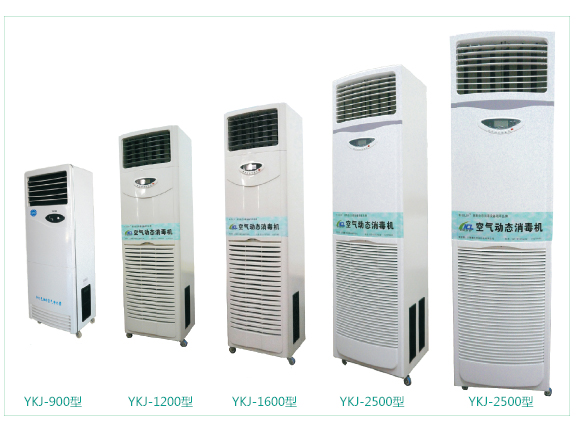
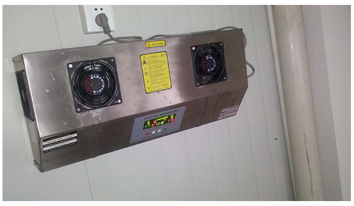
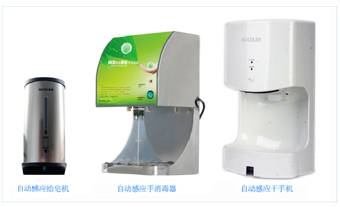
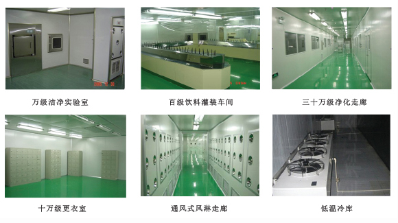
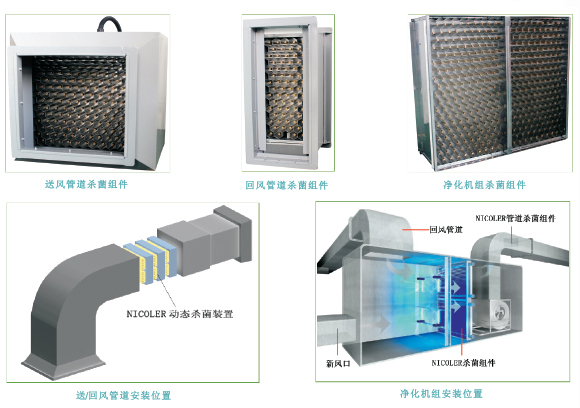

食品、饮料厂解决方案
作者：admin发表时间：2016-12-13 15:41来源：未知
食品安全是个系统工程，某一环节或工序的安全措施跟不上，即可导致“100-1=0”的前功尽弃事件发生，轻则引起菌落总数超标、重则保质期内霉变致退货。为了更好的保证食品生产环境的安全，针对食品安全生产的综合解决方案介绍如下：
一、白天工人上班的时候，如何对车间进行杀菌？
工人上班的过程中，车间空气中的细菌，容易二次污染裸露在空气环境中待包装的食品半成品。现在的动态杀菌净化技术，可以在有人的情况下持续灭菌、对人体无害。 建议采购东线智造的“食品动态净化机”，其使用方法为：在工人上班时开机、过程中持续杀菌不关机，工人下班后同步关机。经实践表明：在无菌环境下生产出的食品可减少食品霉变，微生物二次污染等问题发生。

二、晚上工人下班后，食品生产车间该如何消毒？
工人下班后，生产车间的细菌及工、器、具上的细菌会不停的滋生，若不及时控制则会提高食品被污染的风险，现在基本用“双核臭氧”替代“紫外线”，保证食品卫生安全。 建议采购东线智造的双核臭氧发生器，基于AORODO-II平台上开发，在技术上基本做到人机合一，质量上做到两年内免维修，杀菌效果做到按个数计算

三、工人进更衣室时，如何对手部清洗杀菌？
员工进入更衣室后，必须要对手部进行清洁、消毒。清洁是为了去除手部的灰尘、污垢等，消毒时为了杀灭手部的细菌、致病菌等，目的为防止手部的细菌二次污染食品。 建议采购东线智造的自动给皂机、自动干手器、自动手消毒器；全线采用德国的制造工艺与理念，两年内出现任何的机械故障直接更换新机器。

四、十万级无尘无菌洁净室，如何动态消毒？
即使是1万级净化室，也只能做到“无尘”做不到“无菌”。因为，洁净室是通过初、中、高效过滤的一种净化方式，其本身不具备杀菌功能，细菌依然在车间内漂浮。 建议采购动态杀菌组件，任一安装在送风、回风管道或机组内，洁净室含菌空气每循环一次则杀菌一次，并抑制空调表冷器、管道内壁等所滋生细菌，完全在有人情况下进行。

五、生产车间的拖把、地面如何杀菌消毒？
地面不经常消毒，扬尘时易造成霉菌、大肠杆菌的超标；需要说明的是在拖地时，尽量将拖把拧干，可尽量降低车间湿度，做到对地面消毒的同时，控制扬尘，并防止人滑倒。 建议采购POLOPA水消毒片，每天投入成本为2毛钱，配置浓度为50PPM以上，用于浸泡拖把后拖地。冬季，每天上午拖地一次即可；夏季，上、中午各拖地一次。

1～10万级洁净室 工程结构
1、洁净室围护结构的墙面、顶面材料一般采用50mm厚的夹芯彩钢板，配套净化专用的氧化铝型材制作。门，采用净化密闭门；窗，采用铝合金玻璃固定窗。 2、地面；采用无溶剂环氧自流平洁净地坪或采用高级耐磨PVC洁净地板。 3、净化通风管道；选用镀锌薄钢板外加保温材料制作。 4、净化原理：气流→空调→初效空气处理→风机送风→中效空气处理→NICOLER杀菌组件→净化管道→高效送风口→洁净室→带走微尘→回风夹道→回风、新风（气流）。循环以上过程，即可得到室内无菌无尘的正压洁净空气，使得食品在真正的无菌无尘车间生产。 最后，欢迎您到上海金山工厂，同东线智造公司安全工程师一同讨论食品安全生产技术！！